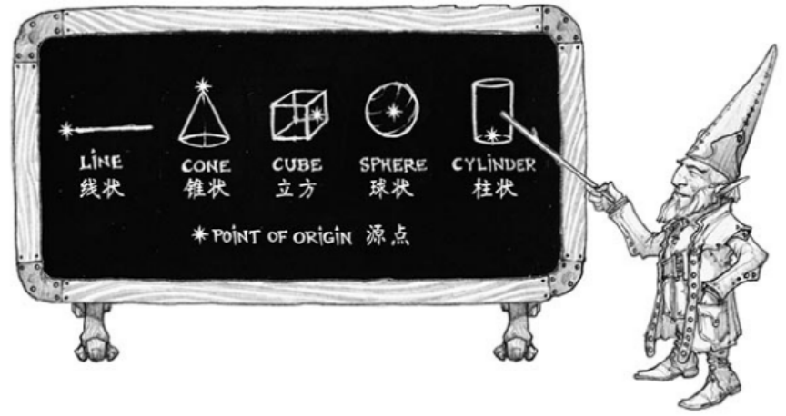

世界中到处都是魔法，而其最常见的形式就是法术。本章主要介绍各种法术的施法规则。不同职业的角色以不同的方法学习和准备法术，而怪物们也有其独特的法术用法。但各种不同源头的法术都遵循此处所介绍的规则的规则。
法术是什么?
一项法术是一个独立的魔法效应，是一次对多元宇宙中所弥漫的魔法能量进行重塑操作，最后以特定的方式在特定的区域进行具现的过程。施展某个法术时，施法者会谨慎的将不可见却无处不在的原生魔力拨起，将其交织固定成型并使之以特定的方式震荡回转，再释放出来以达成预计的效应——而这一切通常只发生于数秒之间。
法术可以作为一种便利的工具，武器或是防护结界。它们可以制造或抚平伤害，也可以产生或消除特定的状态，甚至还可以汲取或赋予生命力量。
多元宇宙的无穷历史里曾创造了数不尽的法术，只是当中大部分已遭遗忘。其中某些部分可能还记载在古遗迹中残碎的法术书里，或者困于已逝之神的记忆中。也许某天，当某个角色累积了足够的力量与智慧后，这些大能者便可以在世上重现。
多元宇宙中的世界都是充满魔法的地方，其内所有存在都浸透着魔法的力量。每一块石头，每一条溪流，每一个活物，甚至是空气本身都蕴含着未开发的潜在能量。这些原生的魔法是造物的原料，也是尚且静默的存在意识，它渗透在每一点物质中，又在多元宇宙中以各种能量的形式作表现存在。
凡人无法直接使用这些原生魔法，但却可以借力于一种魔法的织造结构作为连接施法者意识与原生魔法原料的桥梁。被遗忘国度的施法者将其称为魔网Weave，并奉其本源为女神密斯特拉。其它世界的施法者会用不同的名字来称呼这种魔法的编织构造，也不认为他们世界的魔法被密斯特拉掌控。
施法者们对这种桥梁的命名和认知各不相同，但不管如何称呼，没有这种桥梁，原生魔力就被锁定而无法触及。最强大的大法师在桥梁被阻绝的地方也休想用魔法点燃一根蜡烛。而在桥梁环绕的地方，施法者就能招来闪电重击敌人，或在一瞬间传送到千里之外，或甚至可以逆转死亡。
每一个被创造出的魔法效应都是魔网的经纬经过缠结、扭曲、折叠等操作塑造出的效果。某个角色施展预言法术如“侦测魔法Detect Magic”或者“鉴定术Identify”时即是瞥见魔网本身。法术如“解除法术Dispel Magic”即是抚平魔网，而法术如“反魔法力场Antimagic Field”则是将魔网重新修整，并让魔法在法术范围之外流过，而不是穿行其中。而在魔网受损或被阻断的地方，魔法的效应将变得不可预测，甚至彻底消失。
法术环阶
每项法术都属于0至9环其中一阶。法术的环阶大致指示了它的强度，低阶（但依然神奇）的法术里有1环的“魔法飞弹Magic Missile”，而高阶法术里则有惊天动地的9环“祈愿术Wish”。0环戏法是一种简便到几乎只靠默念就可以施展的强大法术。施展高环阶法术时，施法者本身也必须具有较高的施法者等级。
对于专职的施法职业来说，要施展某一环阶的法术，职业等级需要达到“2×法术环阶-1”级。
已知法术和准备法术
在施法者能用某项法术前，他必须先将这项法术铭刻在其意识里，或者必须将该法术的力量储存在一个魔法物品中。某些职业的角色（如吟游诗人和术士）只拥有一个有限的已知法术列表，但其中的法术可以一直被铭记在其意识中。同样的模式，也使用于很多使用魔法的怪物。而另一些施法者（如牧师和法师）则需要先进行准备法术的程序。该程序每一职业都有所不同，其具体细节会在相应的职业描述中说明。无论如何，施法者可以铭记的法术是有限的，而其数量会随角色的等级而增加。
法术位
不论施法者已知或准备了多少法术，他都只能施展有限的法术，然后就需要靠休息来恢复其施法能力。哪怕施展最简单的法术，操控魔网并引导魔力的过程都会对其身心带来负担，而施展高环阶法术时其消耗则更为严重。因此，每种施法职业的描述都会包含一个列表（契术师除外），列明角色在特定等级所拥有的每个环阶法术位数量。例如，3级法师 乌玛拉Umara具有四枚1环法术位和两枚2环法术位。
施展某个法术时，施法者消耗一枚与该法术环阶相应，或更高环阶的法术位，相当于用该法术“填上”这个法术位的位置。你可以将法术位想像成一条条特定大小的槽，1环法术位是小槽，环阶越高对应的槽就越大。1环法术可以置入到任何大小的法术位中，而9环法术则只能置入到一枚9环法术位中。因此，当乌玛拉施展1环法术魔法飞弹 时，他消耗四枚1环法术位其中之一，并剩下三枚1环法术位。
完成一次长休可以恢复所有已耗用的法术位。
某些角色和怪物具有某些特殊能力，使其在施法时可以不消耗任何法术位。诸如四象宗的武僧、选择了特定魔能祈唤的契术师、九层地狱的深狱炼魔等都可以用这种方式施展法术。
升环施法
当施法者用比法术本身环阶更高的法术位施展法术时，所施展的法术将视为进行升环施法。例如，假设乌玛拉用其2环法术位施展法术魔法飞弹，则放出来的魔法飞弹是一个2环法术。形象上相当于，该法术自行扩大以匹配施法者为其安排的法术位。
某些法术（诸如魔法飞弹和疗伤术cure wounds）在升环施法时会有更强的效应，其细节则会在相应的法术描述中进行说明。
一个由凡人所施展的法术永远不可能升环至超过9环，这是魔网设下的限制。
戏法
戏法是可以随意施展的法术，它不消耗法术位也不需要预先准备。施法者多次重覆的练习已经将这些法术铭记在其意识里，并灌注了足以重复施展的魔力。戏法属于0环法术。
戏法无法被升环施法。
仪式
某些特定的法术带有一项特殊的标签：仪式。这些特殊的法术除了以正常方式施放之外，还可以用以进行仪式施法。仪式施法的施法时间会比相应法术正常施法时间长10分钟。而仪式施法时并不需要消耗法术位，这也意味着以仪式施展的法术不能进行升环施法。
进行仪式施法的施法者必须具有仪式施法的相应能力或特性（比如牧师和德鲁伊的相应特性所述）。该法术还必须处在施法者的准备法术列表或已知法术列表中，除非该角色的仪式施法特性另有指定（比如法师的相应特性所述）。
施展法术
任何角色施展法术时，其使用的都是同一套规则而不论角色的职业种类或法术效应如何。
每项法术的描述的开头都是一组同类的信息，其中包括法术的名称、环阶、学派、施法时间、施法距离、法术目标、法术成分和持续时间。余下的描述则具体说明该法术的相关效应。
施法时间
大部分法术的施展时间只算作一个动作，而有的法术则需要执行一个附赠动作，一个反应或是需要更长的施法时间。施法时间不超过1动作，包括施法时间为1动作、1附赠动作、1反应。
附赠动作
以附赠动作施法的法术特别迅捷。你可以在自已回合内以一个附赠动作施展该法术。
反应
某些法术可以作为反应进行施展。这类法术通常只需要几分之一秒完成，因此可以用作对事件的应对。如果一项法术可以作为反应进行施放，则法术的详细描述会明确说明你在什么情况下能以它作反应。
长时间施展
某些法术（包括进行仪式施法的法术）要数分钟甚至数小时来进行施放。当你所施展法术的施法时间超过一个动作或一个反应时，则你必须在法术施展期间每个自己的回合里都用你的动作来施展该法术，同时还必须保持专注（见下文的“专注”）。如果你失去专注，则法术失败，不过你并不会因此消耗法术位。如果你想再次施展该法术，则必须重新开始其施法程序。
施法距离
法术的目标必须在法术的施法距离内。对于如魔法飞弹一类的法术，其目标是一个生物。而对于火球术一类的法术，其目标则是火球爆开时所处空间的那一点。
大多数法术的施法距离以尺作度量。某些法术只能以你触及范围内的生物作为目标（包括你自身）。还有些法术只影响施术者本身（比如护盾术shield），这些法术的施法距离即为自身。
以你为源点创造锥状或线状效应的法术其施法距离也算作自身，表示该法术效应源点必须是你。（详见本章的“效应范围”）
以你为源点创造的区域，其范围计算是从你占据的每一个方格向外延伸。因此，一个体型较大的生物，释放的“自身（半径若干尺）”的法术，实际上比体型较小的生物释放的同类法术，覆盖区域更大。
法术一旦施放，其效应的作用范围就不再受施法距离的限制，除非法术另有说明。
法术目标
大部分法术都会需要你指定一名或多名受法术魔法影响的目标。法术的相关描述会详述其目标为生物，物件或是作为区域效应原点的空间内某一点（详见下文）。一个生物或物件，即使没有作为法术目标，也依然可能被法术后续效应所影响。
除非法术有可以观察到的效应，否则作为目标的生物不会知道自己已成为法术的目标。噼啪作响的闪电打中谁是大家都看得见的，但读心等较不显眼的效果一般都不会被发现，除非法术另有说明。
错误的目标
如果你指定了不符合“法术目标”一栏描述的生物、物件、空间、魔法效应作为法术目标，那么这个法术目标错误，不会产生任何效果。
举例来说，“魔能爆”仅能指定生物作为法术目标，用它去攻击物件，一阵激烈的力场爆炸特效之后，物件毫发无伤。“支配野兽”仅能指定野兽作为法术目标，如果施法者错误地把一个穿着兽皮外套的人类当成野兽，对他施法，那么由于类人生物与野兽的心智构造不同，他不会受到支配。
与目标间畅通无阻
指定目标时，其与你之间必须畅通无阻，因此目标不可以相对你处于全身掩护状态。换言之，法术需要“效果线”。
如果你将法术效应范围的目标指定在你看不见的地方，而你和该地点之间存在障碍（例如一面墙），则法术的源点改成在该障碍靠近你的一边。
不过，也有一些法术指定目标时不需要“效果线”，比如短讯术。
看见目标
一些法术的目标必须是你能够看见的，另一些法术则不需要视线。详见各法术的描述。一般来说，你低下头来就可以看见自己。
以自身为目标
如果法术的目标是由你指定的生物，则你也可以选择自身作为目标，除非法术描述中明确说明该目标必须是敌对生物或必须不是你自身。你身处自己所施展法术的效应范围之内时，也可以指定自身为法术目标。
没有目标的法术
有一些法术不需要选择目标即可生效，比如谭森变形术、剑刃防护。许多（但绝非所有）施法距离为自身的法术，属于没有目标的法术。
法术成分
法术的成分是施展该法术时必须满足的物质条件。每项法术的描述中都会说明其施展时是否需要言语verbal（V）、姿势somatic（S）、材料material（M）等成分。你只有满足一项法术所有的成分需求后才能施展相应的法术。
言语Verbal（V）
大多数法术都需要咏唱咒文。虽然这些咒文并不给法术供应魔力，但其特定音高共鸣的声音组合却可以牵动魔网的弦线来完成施法。因此，如果你不能说话，例如被塞住嘴巴或者身处静默的空间（如沉默术silence的效应范围），则你将不能施展带言语成分的法术。
姿势Somatic（S）
施法姿势可能包括一记固定的手印或一整套精巧的动作。如果有法术需要姿势成分，则施法者需要空出一只手来完成这些姿势，或者用一只手来挥舞法器，来完成这些姿势。
材料Material（M）
某些法术需要特定的物件才能施展，成分条目里会用括号具体注明。角色们可以使用材料包或法器取代法术所指定的没有价格的材料。但如果一项法术的材料成分有指定的价格，则其每次施展时就必须备有这种特殊材料才行。
如果法术的详述说某材料会作为该法术的耗材，则施法者每次施展该法术时都必须提供该材料。
完成材料成分的手（从材料包中取出材料，或持握法器）可以是完成姿势成分的同一只手。
持续时间
法术的持续时间即是法术生效的时间长短。一个法术的持续时间可以用轮、分钟、小时、甚至年月来度量。某些特定法术的效应甚至会一直持续至该法术被解除或被破坏。
立即
许多法术都是转瞬即逝的。这些法术会以某种方式瞬间伤害，治疗，创造或改变某个生物或物件，由于其魔法只存在于一瞬间，因此其产生的后果无法在事后解除，也无法被压制。
长休与短休
一个生物所施展的，持续时间为24小时或更短的增益性法术，会在该生物完成长休时提前结束。
契术师通过契约魔法的法术位施展的，持续时间为24小时或更短的增益性法术，会在他完成短休时就提前结束。
专注
某些法术或其它能力，需要你保持专注才能维持其效果。如果你失去专注，这个持续性效果也随即终结。
需要专注的能力会在其持续时间条目中说明，同时还会指明专注时间的上限。你可以在自己的回合内，用意念中断专注。当先攻值达到了任何一个数值时，你也可以用意念中断专注，如果一个生物会在此先攻值开始回合，你便是在这个生物的回合开始时中断了专注。你不能在其他生物执行回合的过程中，去中断专注。
移动或攻击等普通活动不会影响你进行专注。而可以打扰专注的因素如下：
·施展另一个需要专注的法术或其它能力。当你施展另一个需要专注的法术时，你失去原来的专注。也就是说，你不能同时为两个法术进行专注。
·失能或被杀。当你陷入失能或死亡时，也会失去当前的专注。
·环境影响。DM可以主动判定某些环境可能令你失去专注。例如面对暴风雨中掩面而来的巨浪时，你必须进行一次DC10专注豁免来判断能否维持专注。
·受到伤害。如果在进行专注时受到伤害，则你必须进行一次基于施法关键属性的豁免，豁免成功则保持自己的专注。如果你所受伤害存在多个不同的来源，例如同时受到箭矢和龙息攻击，则你必须分别为每个伤害源各投一次豁免。专注豁免DC见下表。
伤害与专注豁免DC
单次伤害值 | 专注豁免DC |
1到20点 | 10 |
21到40点 | 伤害值的二分之一 |
41到80点 | 10+伤害值的四分之一 |
81点或更高 | 20+伤害值的八分之一 |
多重专注
如果某些能力让你可以同时维持几个专注，那么当你受到伤害时，仍然是进行一次专注豁免。豁免失败则中断所有专注。
效应范围
燃烧之手和寒冰锥等法术的效应会覆盖一片区域，并同时影响其中的多名生物。
法术的相关描述里会详细说明其效应范围，通常为以下五种形状区域之一：锥状、立方、柱状、线状、球状。效应范围都会有一个爆发魔法能量的源点point of origin。以下每种形状范围的规则里都详述了如何设置相应的源点。源点通常是一个特定地点，有些法术也会要求用生物或物件作为源点。
法术的效应从源点开始以直线扩散。如果由源点到效应范围内的某点的直线受阻，则该地点会被排除在该法术的效应范围之外。要构成阻碍，则被阻碍物必须处于全身掩护中。
在施法完成以后，一个有持续时间的区域型法术（例如“云雾术”“火墙术”），若是区域固定不动，则其法术效应同时处于其占据的区域内的每一个方格。将其中一个方格用障碍物遮挡，与其它方格分割开来，不会阻碍法术的效应范围。若是这个法术的区域后续移动了，那么它每次移动后的效应范围都需要重新计算，障碍物可能会阻碍法术的效应。
举例来说，米雅莉释放出“拂晓”，而李雷在“拂晓”的中心扣上了一个直径10尺的大箱子，这不会让周围的光耀区域消失。米雅莉再操纵“拂晓”的光耀区域移动，移动后的效应范围就会被那个大箱子所阻挡。

锥状
锥状效应会从源点往你所选的方向扩散，其宽度等于该处到源点的距离。锥状区域的效应都有一个特定的最大长度。
你可以自行决定锥状效应范围的源点是否包含在效应内。
立方
你自选立方体效应范围六面上的任一点作为其源点。而立方效应范围都会给出相应的单边的边长。
你可以自行决定立方区域效应的源点是否包含在效应内。
柱状
柱状效应范围的源点是其中一个截面圆的中心，相应法术的描述中会说明其圆的半径。而源点的截面圆必须位于地上，或位于法术效应范围的顶部。柱状的能量由源点直线展开到圆的周界，形成圆柱的底盘。然后，法术的效应从该截面圆由地面往上射或者从顶上往下射，直到达到柱状的高度。
柱状区域效应的源点包含在效应之内。
线状
线状效应范围由源点以一直线延伸出去，法术会说明其线长和线宽。
你可以自行决定线状区域效应的源点是否包含在效应内。
球状
你先选择球状效应范围的源点，然后魔法能量以该点为中心向外扩散构成球形。球形的半径以尺数标示。
球状区域效应的源点包含在效应之内。
法术类型
所有魔法都与魔网紧密相关，只是不同的法术与魔网的接触方式各不相同。
奥术。法师、契术师、吟游诗人的法术被称为奥术魔法。这种法术必须先（通过学习或直觉）理解魔网的工作原理。这些施法者会直接牵动魔网的经纬，来创造出所需的效应。
神术。牧师、德鲁伊、圣武士、游侠的法术被称为神术魔法。这些施法者与魔网的联系还要借助各种神圣力量——众神、大自然的神力或是圣武士誓言的神圣意义。
异能。灵能师、灵能武士的法术被称为异能魔法。这些施法者依靠开发和释放自己内心的潜能，让魔网产生共鸣，施展出法术。
机关术。奇械师的法术被称为机关术魔法。奇械师通过机械压缩球和魔导科技，创造出许多与物品相关的法术。
无类型。某些法术不属于上述所有法术类型。比如武僧通过气施展的法术、某些种族的天生施法。这些法术，通常是特定生理结构引发的神奇现象。
此外，大部分非法术的魔法效应也没有类型，比如魔法物品和某些怪物的魔法能力。
魔法学派
众魔法学院将各种法术分成了八个类别，即为魔法学派。学者们，尤其是法师们，会将所有法术依此归类，并相信所有法术本质上都以相同的方式运作，而不论其是得自慎密的研习，还是来自神袛的恩赐。
魔法学派的分类可以为法术的描述作补充。它们本身不带任何规则，但其他的规则可能会与其相关。
防护Abjuration。防护法术的本质是守护，不过当中也有某些带攻击性的用途。它们可以创造屏障，抵消有害的效应，伤害入侵者，或将生物驱逐到其他存在位面。
咒法Conjuration。咒法法术牵涉到将物体和生物从一处传送到另一处。其中某些法术会将生物或物体召唤到施术者身边，而有些则将施法者传到另一地方。有些咒法还可以凭空创作物件或效应。
预言Divination。预言法术揭露或传递资讯，其形式可以是增强感官，可以是与异界存在沟通，可以是放置传感器。某些高强的预言法术能够言出法随，用自己的言语去影响这个世界。
附魔Enchantment。附魔法术影响他人的心智，改变或控制他们的行为。这些法术可能令敌人视施术者为朋友，或者强迫生物作出特定行为，甚至像扯线人偶一样操纵其他生物。
塑能Evocation。塑能法术将魔法能量塑造成想要的效应。有些会唤出一阵火焰或闪电。有些则会导来正能量治疗伤口。
幻术Illusion。幻术法术可以暪骗他人的感官或心灵。它们令人看见不存在的事物，或者看不见存在的事物，还可以使人幻听或记起没有实际发生过的事。有些幻象任何人都可见，而最阴险隐秘的幻象则会直接将影像植入某生物的思想中。
死灵Necromancy。死灵法术操纵生与死的能量。这些法术可以赋予额外的生命力，或从他人身上汲取生命能量，还可以创造不死生物，甚至起死回生。
用死灵法术创造不死生物（如“操纵死尸Animate Dead”）并不是善良的行径，只有邪恶的施法者才会常用这些法术。
变化Transmutation。变化法术让生物，物体，或环境的属性发生改变。它们可能将敌人变成无害的生物，强化友方的力量，或是令物件活起来听从施法者的指令，又或是强化生物的天生自愈能力让其伤势迅速复原。
豁免检定
很多法术会说明目标可以进行一次豁免来回避法术部分或全部的效应。相关法术的描述中会详细说明使用的什么属性来进行豁免，以及豁免成功和失败的后果。
你的法术的豁免DC=8+施法关键属性调整值+熟练加值+其他适用的调整值。
攻击检定
某些法术会要求施法者进行攻击检定来决定法术是否有命中指定的目标。你进行法术攻击的攻击加值=施法关键属性调整值+熟练加值+其他适用的调整值。
大多数需要攻击检定的法术属于远程攻击。其同样要遵守你在敌对生物的触及范围内进行远程攻击时所具有的劣势减益，前提是该生物必须能看见你且其本身不处于失能状态。
同名效应不叠加
所有生效中的不同法术效应都会累加，而相同的法术就算进行多次施展也不会累加。不过，多次施展相同的法术时只对其中效应最强者生效，也就是当中具有最高加值或最低减值的一个法术，会在时效重叠时起效。或是在这些效应强度相同且时效重叠时，选其中最新施展的效应生效。
例如，假设两名牧师对同一目标施展“祝福术Bless”，则受术角色只得益一次而不会获得投两次额外1d4加值的骰子的机会。
当面施法
如果某人正在施展的法术具有法术成分，那么任何了解过基本的魔法常识、且能够看见这名角色的生物，都会意识到他在施法。
法术是比枪械更危险的东西，会引起他人的警觉。即使某人从来没有碰过枪械、不懂得如何瞄准射击，当他看到枪械时，也依然会大幅度提高警惕。在一个大多数人都听说过法术的世界里，他们看待施法的态度可以参考以下几个例子。
1、牧师克莱尔要与狂战士罗塞比较各自的纯粹肌肉力量，在扳手腕之前，克莱尔念了咒语。尽管罗塞听不懂克莱尔施展的是“神导术”“强化属性”还是“神能”，但是他立刻认为克莱尔在作弊，并拒绝继续比赛。
2、两名商人在谈判交易之前，先请来了一位公正的第三方，检查双方身上是否有“花言巧语”或类似的法术，防止自己遭到欺骗。
3、两名酒徒在酒馆了发生了口角，双方互相推搡，情绪激动。忽然，其中一人后退了一步，在衣兜里做出施法的手势。原本在围观看好戏的路人，顿时紧张起来，前去报警——在城市的法规中，在公共场所施法决斗，其严重性远高于普通的拳脚冲突，等同于拔出了致命的武器。一场普通的斗殴，因一个施法姿势而瞬间升级为需要官方武力介入的重大事件。
超魔法
强大的施法者可以更改法术的运作公式，根据自己的意愿，有限度地改变法术的效果。这种能力，称为超魔法。使用超魔法需要掌握对应的超魔专长，还要具备足够的术法点。
超魔专长都使用一种叫做“术法点”的资源。通过消耗术法点，你可以扭曲所施展的法术使其符合你的需求。除非特别说明，否则一个法术能够多次添加不同的超魔效果。添加超魔效果不会改变法术的名字，也不能绕过“同名效应不叠加”规则。
“获得X点术法点”的特性，会同时提高你的术法点上限。你永远无法获得超过上限的术法点。在完成一次长休后，你恢复所有术法点。
施展超魔法术的步骤
1、选择一个法术和若干个符合条件的已知超魔专长，支付法术位和术法点。你可以用一个超魔专长去改变法术，让它符合另一个超魔专长的使用条件。比如把一个施法时间为1分钟的法术先“法术速发”再“法术瞬发”，最终施法时间为1附赠动作。
2、判断该法术是否会被反制，如果被反制，那么法术位、术法点、被消耗的法术材料成分、施法用的动作等资源，都会被浪费。
3、如果没有被反制，正常结算法术效果。